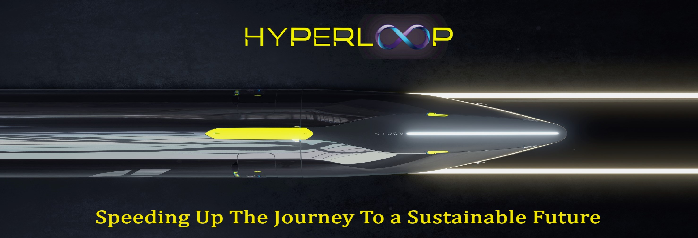
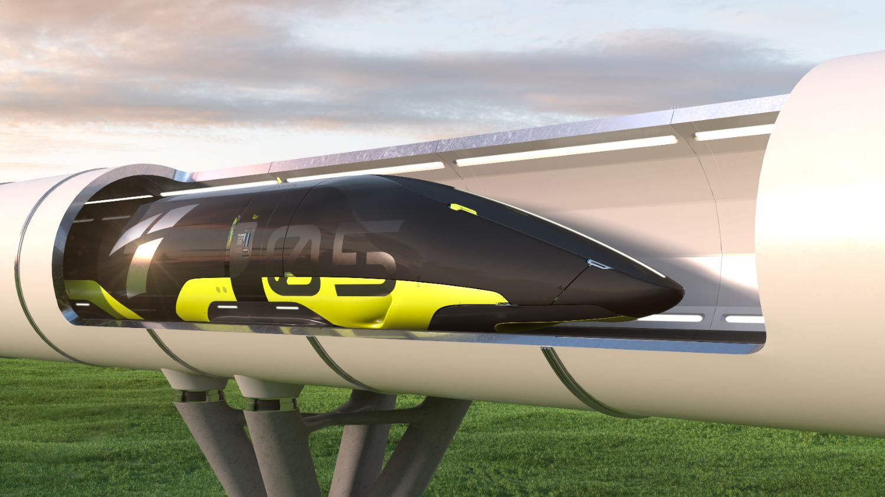
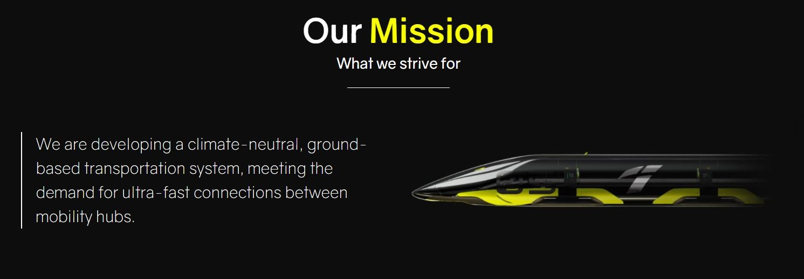

{% extends "layout.html" %}
{% block title %}
Home
{% endblock %}
{% block main %}

What is HyperLoop
Hyperloop is an ultra-high-speed ground transportation system for passenger and cargo proposed as a concept by Elon Musk, CEO of Tesla and SpaceX, in a white paper back in 2013.


Terms and conditions
The trip fare will cost Rs. 1.5 per KM + 18% Goods And Services Tax.
If the ticket is cancelled, 50% of the cost of the ticket will be refunded to you.
You will get a one-time sign up bonus of 10,000 credits in Hyperloop Lite wallet.
No eatables allowed aboard the Hyperloop Pod.
Passengers under the age of 18 must be accompanied by an adult.
Stay clear of the doors after the warning beep.
Download our Hyperloop App and show the booking details at the entrance.
Passengers with epilepsy or other medical conditions must board the Hyperloop Pod with the consultation of a physician and at their own risk.